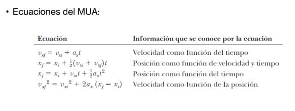
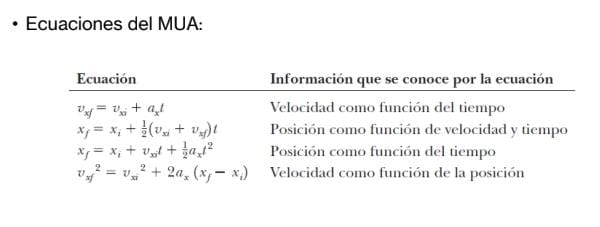

Movimiento Uniforme
Un movimiento uniforme es aquel que tiene lugar con velocidad constante. La velocidad v de un móvil se obtiene dividiendo el espacio e recorrido entre el tiempo t que tarda en hacerlo.
v = e / t
En esta práctica se deduce la velocidad de una masa que desliza a partir de los tiempos de paso medidos a distancias conocidas. Utilizaremos un muelle para acelerar la masa. Siempre que la compresión sea la misma, la velocidad se repite. Un suelo sin rozamiento garantiza el mantenimiento de la velocidad (principio de inercia).
Para minimizar el error en la medida de los tiempos de paso, se repite varias veces la experiencia comprimiendo el muelle la misma distancia. Se calcula la media de los tiempos tm al paso por cada espacio. Con estos tiempos medios de deduce la velocidad al paso por cada marca. De todas estas velocidades de deducir la velocidad media del experimento. Aprende más.

 
